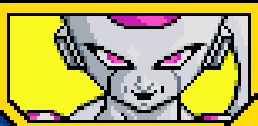
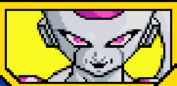

Lors de l'affrontement face à Vegeta, tout le monde se fait vaincre un à un par le prince qui a eut les Dragon Balls. Goku et Piccolo affronte Vegeta surpuissant pour protéger la Terre. En essayant de protéger Gohan, Piccolo meurt de la main de Vegeta, afin de le faire revivre, nos héros vont sur Namek pour y trouver les Dragon Balls.
Débloque la compétence "Kaioken" et l'attaque combineée avec Piccolo "Attaque Feintée".


Après avoir massacré toute l'équipe de Goku, il ne restait que Gohan et Krilin, soudainement Freezer énervé de ne pas pouvoir être immortel, tue Krilin de sang froid. Accablé par la rage, Son Goku se transforma en Super Saiyan et s'en suit un combat contre Freezer sur une planète Namek sur le point d'exploser.
Débloque Freezer comme personnage jouable après le combat.
 

Après la défaite contre Freezer, un jeune homme se prétend être le fils du prince Vegeta et venant du futur, arrive devant Goku et lui explique l'histoire des cyborgs qui ravageront la Terre dans les années à venir et qu'il mourra d'une maladie cardiaque pour cela il ramena un traitement pour le soigner, soudainement un cyborg s'apparentant au Docteur Gero se présenta à nos héros. Voyant que Goku s'affaiblissait et ne pouvant plus se transformer en Super Saiyan, il en profita, mais Goku avait encore le Kaioken X20 pour faire face au cyborg, accompagné de Trunks. Après cette bataille, le cyborg fut défait et la paix fut instaurée, mais pas pour une longue durée ...
Débloque l'Attaque Ultime "Kaioken X20"


Après que la menace des cyborgs soit passée, un étrange vaisseau arrive sur Terre, il y avait un Saiyan nommé Paragus, qui signale à Vegeta qu'il peut devenir le roi des Saiyans sur la nouvelle plnaète Vegeta, sauf qu'il y a un Super Saiyan Légendaire qui bloque tout cela, Trunkset Goku se doutant de quelque chose suivirent Vegeta et Paragus. En arrivant sur les liens tous se rendirent compte que Broly le fils de paragus est le Super Saiyan Légendaire. Après un violent combat , Broly fut défait par Goku, en lui assenant un coup fatal, après avoir obtenu l'énergie de ses amis .
Débloque Broly comme personnage jouable.
Terminer le combat contre le Docteur Gero en faisant un Ultimate KO .


Après avoir vaincu les cyborgs et sauvé le monde, une nouvelle menace s'approche de la Terre. Le frère de Freezer, Cooler se présenta à nos héros pour venger l'honneur de sa famille, après avoir apprit que Freezer a été tué par un Super Saiyan, après avoir vaincu les amis de Goku, Son Goku part affronter Cooler et son Escadron.
Terminer le combat contre le Docteur Gero en faisant un Ultimate KO .

En allant sur Namek, Goku, Vegeta et Piccolo se rendent compte que la planète commence à être absorbé par une sorte de planète-machine, le Big Gete Star, en mettant les pieds sur la planète, nos héros rencontre Cooler qui était revenu à la vie grâce à l'étoile, ce qui lui a donné un corps métallique et une armée de clone de lui-même. Après un long affrontement face à Metal Cooler, Goku trouve la faille de Metal Cooler qui est la limite d'énergie, c'est alors qu'il envoit toute son énergie au noyau de Cooler qui surchauffe et explose, libérant Namek du jout de Metal Cooler.

Débloque Goku Super Saiyan.
Terminer le combat contre Cooler.

Grâce au remède de Trunks, Goku a put guerir de sa maladie cardiaque, mais un cyborg nommé Cell, création de l'ordinateur de Docteur Gero apparait devant Trunks, lors du combat face à Vegeta et ce dernier après absorbé C17 et C18, il compte organiser un tournoi à la manière du Tenkaichi Budokai, où il sera le seul et unique adversaire et si tout le monde perd, il ravagera le monde. De ce fait Goku s'entraîne avec Gohan pour pouvoir affronter Cell lors de ce tournoi. A la suite de ce combat Goku et Gohan gagne face à Cell et ne voulant accepter la défaite, la forme de vie décide de s'autodétruire pour emporter la Z-Team et la Terre avec lui. C'est alors que Goku utilisa la Transmission Instantanée pour emporter Cell et l'explosion avec lui, faisant qu'une seule victime : Goku.
Débloque la capacité "Transmission Instantanée".
Terminer le combat contre Gero


Goku part dans l'Autre Monde et participe au Tournoi de l'Autre Monde, il arrive sans difficulté à la finale et il y rencontre Bardock qui sera son adversaire, quand soudainement Kaio interrompt tout pour alerter que Cell et Freezer sont devenus fous et cassent tout en Enfer et c'est comme ça que les deux Saiyans partent affronter Cell et Mecha Freezer, le tout sans savoir que les deux sont père et fils.
Débloque Bardock comme personnage support.

Terminer le combat contre Cell, sans utiliser Gohan
Goku apprend que Bardock et son père et discute avec lui, on apprend que Bardock s'est inscrit au tournoi pour vaincre Freezer et qu'en voyant la puissance de son fils, Bardock lui propose un plan de conquête ce que Goku refuse poliment, lui disant qu'il est loin de tout ça et qu'il n'est pas mauvais à ce point. Après cela Goku entame un dur entraînement face à lui même pour pouvoir dépasser Cell seul.
Débloque l'Attaque Ultime "Super Saiyan 3" .
Terminer le combat contre Mecha Freezer et Cell
Après 7 ans de paix, Goku étant mort, a put revenir dans le monde des vivants grâce à Baba la Voyante, pour participer au Tenkaichi Budokai, le tout pendant 24h, seulement le sorcier Babidi était là pour faire revivre Boo et n'a pas hésité à corrompre Vegeta et prendre l'énergie de Gohan pour y parvenir. Babidi transporta tout le monde dans son vaisseau et Goku et Gohan durent affronter Vegeta controlé par Babidi et Boo. A la fin du combat Goku arriva à raisonner Vegeta, mais malheuresement Boo entre dans une colère noire et deviens Boo (Mauvais) .

Terminer le combat contre Cell


Après avoir battu Boo et Vegeta (Mauvais), Boo devint Boo (Mauvais). Goku et Vegeta qui est redevenu normal font alliance pour vaincre Boo
Débloque l’attaque combinée avec Vegeta (Super Saiyan) nommée "Super épée Bagit".
Terminer le combat contre Majin Vegeta et Boo


Après le combat Boo (Mauvais), ce dernier détruisit la Terre, nos deux héros purent s'échapper et arriver dans le monde des Kaioshins,Boo les a suivi et un affrontement sans précédent avait lieu, le seul moyen de le battre et de faire un Genkidama, mais l'énergie n'était pas assez grande pour térrassée Boo, seulement Mr Satan était là, même si ce fut une gène au premier abord, il put servir à convaincre les terriens de donner leur énergie à Goku pour un Super Genkidama et par la suite vaincre Boo et sauver l'Univers.
Débloque l’attaque combinée avec M Satan nommée "Super Genkidama".

Terminer le combat contre Boo (Mauvais)


Après avoir vaincu Boo et sauver l'Univers, le Tenkaichi Budokai peut reprendre et Son Goku affronte Piccolo qui depuis a augmenté en terme de puissance. Après un bon combat, Goku gagne le duel et passe au prochain adversaire.

Terminer le combat contre Boo (Mauvais)


Après plusieurs victoires lors du championnat, il accède à la finale, son adversaire n'est autre que son propre fils, Gohan qui depuis a bien augmenté en terme de puissance. Après un combat intense, Goku s'avoue vaincu et son Gohan gagne la finale. C'est alors que Kaio contacte Goku pour retourner dans l'Autre Monde, car il y a un adversaire terriblement fort qui sème le grabuge là haut. Goku retourne vers de nouveaux combats.

Terminer le combat contre Piccolo